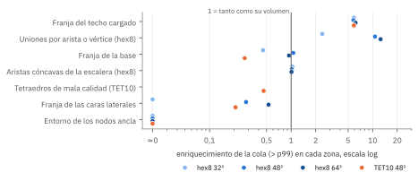
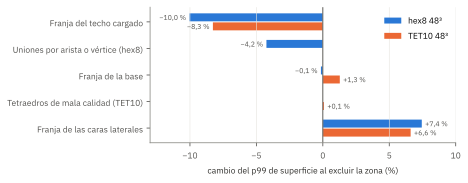
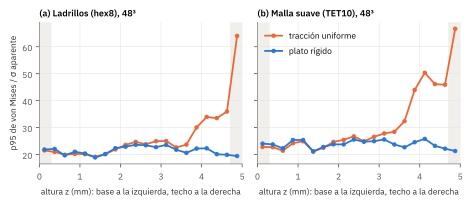
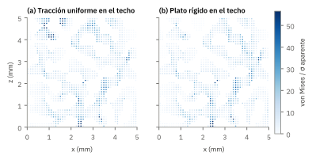
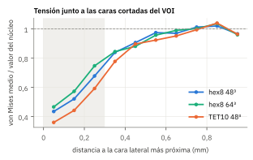
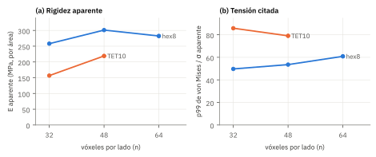
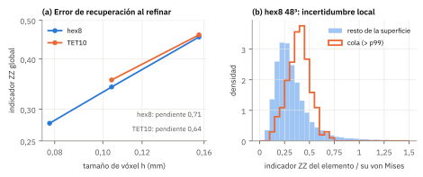
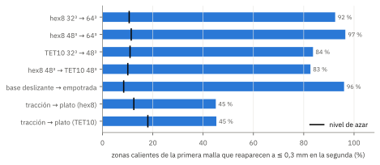

La versión 2 de spinpy resuelve sus ensayos con motores de elementos finitos internos (NGSolve, scikit-fem y, si están instalados, FEniCSx y SfePy). La comparativa previa demostró que esos motores resuelven el mismo problema discreto con diferencias del orden del redondeo. Este informe aborda la pregunta siguiente: qué parte de lo que ese problema discreto predice es un artefacto, es decir, una consecuencia de cómo se recorta el volumen, se malla, se carga y se resuelve, y no de la arquitectura trabecular.
Se resolvieron ocho ensayos lineales sobre el mismo espinodoide (dos tipos de malla, tres resoluciones, dos condiciones de carga y dos de apoyo) y se rastreó el origen de cada valor alto de von Mises. El documento está organizado como una guía: un resumen en una página, una explicación del método, una ficha por artefacto con lo medido y las opciones para corregirlo, y una hoja de ruta priorizada.
Los motores no introducen artefactos propios cuando se resuelven con un método directo o con BDDC. Los artefactos importantes nacen antes del resolvedor: en cómo se carga el techo del volumen, en las caras por donde se recortó y en la discretización de la superficie ósea.
| Código | Artefacto | Afecta sobre todo a | Magnitud medida | Gravedad |
|---|---|---|---|---|
| A1 | Techo cargado con tracción uniforme sobre trabéculas cortadas | E aparente, p99, máximo, Pistoia | E ×0,62 frente al plato; p99 +32 % (hex8) | Grave |
| A2 | Caras laterales cortadas por el recorte del VOI | E aparente, fracción portante | 21 % del hueso con la mitad de tensión | Grave |
| A3 | Rigidez que depende del tipo de malla (hex8 frente a TET10) | E aparente, comparaciones entre mallas | TET10 −27 % (tracción) y −10 % (plato) | Grave |
| A4 | Escalera de vóxeles y tensión de cola sin convergencia | p99, máximo, mapas de tensión | p99 +22 % de 32³ a 64³; error local 25 a 45 % | Moderada |
| A5 | Uniones por arista o vértice entre vóxeles (bisagras) | Máximo, mapas locales | ×10 a ×13 de enriquecimiento; contiene el máximo a 64³ | Moderada |
| A6 | Error oculto del iterativo CG + pyamg con TET10 | Desplazamientos, tensión local | 0,9 % en u con residuo 10⁻¹⁰; p99 +0,1 % | Leve |
| A7 | Definición de E aparente (media de nodos o por área) | E aparente | 1 a 4 % (hasta 9 % en el VOI H4) | Leve |
| C | Controles: anclas del apoyo, base empotrada, tetraedros de mala calidad | Ninguno citado | Sin efecto detectable en la cola | Sin efecto |
Las zonas calientes son, en su mayoría, reales: el 83 al 97 % reaparece en el mismo sitio al cambiar de resolución o de tipo de elemento (frente a un 10 a 11 % esperable por azar). Lo que no es fiable es su valor, que depende de la malla, y la rigidez aparente, que depende sobre todo de cómo se carga el techo. Las tres correcciones con mejor relación entre beneficio y esfuerzo son ofrecer el plato rígido lineal como condición de carga (o informar ambas), excluir una franja de 0,3 a 0,6 mm junto a las caras del VOI en los estadísticos citados y añadir a la aplicación un indicador de error por recuperación de tensiones.
En un ensayo de elementos finitos sobre un volumen de interés (VOI) de hueso trabecular, cada número que se publica es el resultado de una cadena de decisiones: segmentar la imagen, recortar un cubo, discretizarlo, aplicar unas condiciones de contorno, resolver un sistema lineal y resumir el campo de tensiones en un estadístico. Llamamos artefacto a toda parte del resultado que cambia al modificar una de esas decisiones sin modificar el hueso. La definición es operativa: un artefacto se detecta porque el resultado depende de algo que no debería importar.
La distinción importa porque los artefactos no afectan por igual a todas las magnitudes. La rigidez aparente es una integral sobre todo el volumen y tolera bien el error local, pero es muy sensible a lo que ocurre en los bordes del espécimen. La tensión de cola (el p99 de von Mises en la superficie, que la aplicación cita, o el máximo, que no cita) depende de unos pocos elementos y, por tanto, de su forma, de su tamaño y de su vecindad. Las guías de reporte de elementos finitos en biomecánica piden precisamente separar la verificación del cálculo (el error de discretización) de las decisiones de modelado que condicionan la respuesta1.
Error de discretización. Diferencia entre la solución del problema discreto y la del problema continuo con la misma geometría. Disminuye al refinar la malla. La comparativa de motores verificó que su orden es el teórico en un cubo con solución exacta.
Artefacto de modelado. Diferencia entre el problema continuo planteado y el que se quería plantear: un techo cargado de una forma que no existe in situ, caras que en el hueso real continúan, una superficie con escalones. No disminuye al refinar.
Concentración física. Tensión alta que el hueso tendría de verdad, por ejemplo en una trabécula delgada que trabaja a flexión. Es la señal que se quiere medir.
El método de la sección 2 separa estos tres componentes con dos herramientas: la persistencia (una concentración física aparece en el mismo sitio con cualquier malla) y la sensibilidad (un artefacto cambia cuando se cambia la decisión que lo produce).
Se usó el espinodoide de referencia de la comparativa de motores (densidad relativa 0,30, número de onda 12π, 700 ondas, conos de 30°, 30° y 90°, semilla 1, cubo de 5 mm de lado). Con la misma semilla, el campo aleatorio que define la estructura es idéntico a cualquier resolución: al cambiar n cambia la discretización, no el hueso. La longitud de onda de la estructura es de unos 0,83 mm.
Sobre él se resolvió el ensayo de compresión lineal de la aplicación (E = 20 GPa, ν = 0,3) con NGSolve: Cholesky disperso con hexaedros y CG con precondicionador BDDC con TET10, las opciones por omisión del motor recomendado. La Tabla 1 resume los ocho ensayos y un noveno con el iterativo de scikit-fem. Los valores TET10 de 32³ y 48³ reproducen los de la comparativa de motores a todas las cifras publicadas (E aparente 156,68 y 219,02 MPa; p99 85,77 y 79,03 MPa), lo que sirve de control del banco de pruebas.
| Malla | n | Carga en el techo | Base | GDL | Elementos | E aparente (MPa) | p99 / σ | t (s) |
|---|---|---|---|---|---|---|---|---|
| hex8 | 32 | tracción uniforme | deslizante | 62 595 | 9 735 | 258,0 | 49,7 | 1,1 |
| hex8 | 48 | tracción uniforme | deslizante | 173 484 | 33 219 | 301,1 | 53,5 | 4,5 |
| hex8 | 64 | tracción uniforme | deslizante | 365 655 | 78 874 | 282,3 | 60,9 | 16,0 |
| hex8 | 48 | plato rígido | deslizante | 173 484 | 33 219 | 489,0 | 40,4 | 3,2 |
| hex8 | 48 | tracción uniforme | empotrada | 173 484 | 33 219 | 313,1 | 51,8 | 3,4 |
| TET10 | 32 | tracción uniforme | deslizante | 314 880 | 54 741 | 156,7 | 85,8 | 16,7 |
| TET10 | 48 | tracción uniforme | deslizante | 790 599 | 143 208 | 219,0 | 79,0 | 59,9 |
| TET10 | 48 | plato rígido | deslizante | 790 599 | 143 208 | 440,6 | 50,4 | 54,6 |
| TET10 (scikit-fem, CG + pyamg) | 32 | tracción uniforme | deslizante | 314 880 | 54 741 | 157,0 | 85,9 | 174,6 |
Tabla 1. Ensayos resueltos. E aparente por la definición de área (media de uz sobre las caras cargadas); p99 de von Mises en la capa superficial, ponderado por volumen, dividido por la tensión aparente σ (fuerza de reacción entre sección bruta). GDL: grados de libertad.
A cada elemento se le asignaron etiquetas de origen posible, no excluyentes: estar a 0,3 mm o menos (un tercio de la longitud de onda) de una cara lateral, del techo, de la base o de un nodo ancla; tocar una unión por arista o vértice entre vóxeles (hex8); tocar una arista cóncava de la escalera (hex8); o ser un tetraedro de mala calidad, con diedro mínimo inferior a 5° o relación radio-arista superior a 3 (TET10). Con esas etiquetas se calcularon cuatro magnitudes.
Fracción de la cola (volumen por encima del p99 de superficie) que cae en una zona, dividida por la fracción de la superficie que ocupa esa zona. Un valor de 1 indica que la zona contiene tanta cola como le corresponde por tamaño; 6 indica seis veces más; 0,3, que la zona está descargada.
Cambio relativo del p99 citado cuando se excluyen del cálculo los elementos de la zona. Traduce el enriquecimiento a lo que importa en el informe de la aplicación: cuánto se mueve el número publicado.
Distancia entre la tensión de cada elemento y la que resulta de promediarla en sus nodos (recuperación de Zienkiewicz y Zhu10), dividida por su von Mises. En una solución suave ambas coinciden; un valor de 0,4 indica que la tensión del elemento es incierta en un orden del 40 %.
Fracción de las zonas calientes de una malla que tienen otra zona caliente a 0,3 mm o menos en una segunda malla. Se compara con el mismo cálculo para elementos elegidos al azar (20 repeticiones), que da el nivel esperable sin relación espacial.
La Figura 2 resume la atribución. El techo cargado concentra entre 4 y 6 veces más cola de la que le corresponde por volumen en todas las mallas, y las uniones por arista o vértice entre vóxeles, entre 2 y 13 veces, con un enriquecimiento que aumenta al refinar. En el extremo opuesto, la franja junto a las caras laterales está descargada, y el entorno de los nodos ancla no aporta nada a la cola. Las aristas cóncavas de la escalera están en todas partes (más del 90 % de la superficie de los hexaedros toca alguna), de modo que no discriminan: la escalera no es un defecto localizado sino la forma de toda la superficie, y su efecto se estudia con el indicador ZZ (ficha A4).

Cada fila es una zona del espécimen y cada punto, una malla. Los puntos a la derecha de la línea vertical indican zonas que acumulan más tensión alta de la que les corresponde; a la izquierda, zonas descargadas. Que los puntos de una fila se desplacen al refinar (como en las uniones) indica que el fenómeno depende de la malla.

El ensayo de la aplicación reparte la carga como una presión uniforme sobre la parte del techo que es hueso. Al recortar el VOI, muchas trabéculas quedan cortadas en el plano del techo con un extremo libre: en el hueso real continuarían y estarían sujetas por sus vecinas, pero en el modelo reciben su parte de la carga sin nada que limite su desplazamiento lateral ni su giro. Trabajan como voladizos cargados en la punta.
La tracción uniforme es una condición de contorno estática: fija la fuerza y deja libre el desplazamiento. Las trabéculas cortadas más flexibles se hunden más que las demás y se deforman mucho, lo que eleva su tensión y baja la rigidez aparente. Con un plato rígido, el desplazamiento vertical del techo es el mismo en todos los nodos y las trabéculas cortadas solo transmiten la carga que su rigidez les permite. Cabe esperar que la respuesta in situ, en la que el hueso continúa más allá del techo, quede entre ambas, aunque con caras laterales libres ninguna de las dos es una cota en sentido estricto; las condiciones de desplazamiento uniforme tienden a sobrestimar la rigidez efectiva de volúmenes pequeños4,5. Es el equivalente computacional del artefacto de extremos de los ensayos de compresión con platos, que en especímenes reales subestima el módulo entre un 20 y un 40 %2.
Con tracción uniforme, el 34 al 37 % de la cola de von Mises de los hexaedros cae en el 6 % del hueso situado a menos de 0,3 mm del techo (enriquecimiento de 5,8 a 6,2), y el 28 % con TET10 a 48³. Con plato rígido esa franja queda descargada (enriquecimiento de 0,43 con hex8 y 0,05 con TET10). El perfil de la Figura 4 muestra que el efecto no se limita al plano del techo: la tensión con tracción supera en más de un 20 % a la del plato desde 1,25 mm por debajo del techo con hex8 y desde 1,5 mm con TET10, es decir, en un 25 a 30 % de la altura del espécimen. En la mitad inferior, las dos condiciones dan el mismo perfil (cociente medio 0,99 a 1,00).
Las consecuencias sobre los números citados son grandes. El E aparente con plato es 1,62 veces el de tracción con hex8 y 2,01 veces con TET10; el p99 de superficie baja un 24 % (hex8) y un 36 % (TET10); el máximo de von Mises, un 42 % (hex8). Solo el 45 % de las zonas calientes con tracción reaparece con plato, frente al 83 a 97 % que persiste al cambiar de malla (sección 5): la condición de carga cambia también dónde se concentra la tensión.
Con tracción, cada extremo cortado recibe carga y puede girar; con plato, todos bajan lo mismo.


Ofrecer el plato rígido lineal como condición de carga del ensayo. Los motores ya lo resuelven (control="plato" en motores.problema_de_malla) y fem.ensayo lo calcula cuando se pide nl_plato (el cociente cociente_plato_fuerza_lineal). Falta exponerlo como análisis lineal independiente y en la GUI.
Informar siempre las dos condiciones como cota. Tracción y plato son dos condiciones extremas plausibles para el techo; publicar ambas, o su cociente, informa al lector de cuánto depende el resultado de la condición de carga.
Cargar a través de una capa de hueso. Simular un VOI mayor y medir en el cubo central (configuración embebida), o usar condiciones mixtas compatibles con la periodicidad, que dan propiedades más próximas a las efectivas4,5.
Excluir una franja del techo de los estadísticos de tensión. Un percentil calculado sin los 0,3 mm superiores bajó el p99 entre un 6 y un 11 % según la malla. Es una mitigación del síntoma, no de la causa, y debe declararse.
Las cuatro caras laterales del cubo cortan trabéculas que en el hueso continuarían. Una trabécula cortada en el lateral pierde la conexión con la red que la sostenía y deja de transmitir carga vertical. Un volumen de hueso que existe en el modelo, que cuenta en el BV/TV y en la sección, trabaja poco o nada.
Las caras laterales son superficies libres en el modelo, pero no en el hueso. El fenómeno es bien conocido en especímenes reales con el nombre de artefacto lateral: en núcleos de vértebra humana la franja periférica mayoritariamente descargada midió entre 0,19 y 0,58 mm, y su efecto subestimó el módulo en un 27 ± 11 % de media, más en especímenes pequeños y de menor densidad3.
El 21 % del hueso (hex8) y el 20 % (TET10) está a 0,3 mm o menos de una cara lateral. Su tensión media es el 49 % de la del núcleo con hex8 a 48³, el 51 % a 64³ y el 43 % con TET10 (Figura 6). La tensión se recupera hasta el valor del núcleo a unos 0,6 mm de la cara, del mismo orden que la franja descrita en hueso real. La franja lateral contiene entre 0 y 11 % de la cola, con un enriquecimiento de 0 a 0,5, y excluirla sube el p99 entre un 4,7 y un 8,1 %.
La relación entre esta descarga y el E aparente no se cuantificó directamente en este estudio. Por analogía con los datos experimentales3, cabe esperar que el E aparente de un VOI de 5 mm esté subestimado respecto del que tendría el mismo hueso in situ, pero la magnitud en estas estructuras sintéticas requiere el ensayo que se propone abajo.
Las trabéculas horizontales cortadas en el lateral (franjas naranjas) pierden su apoyo y quedan descargadas.

Medir dentro de una región de interés central. Calcular los estadísticos citados y la deformación aparente (como haría un extensómetro) solo en el núcleo, a más de 0,3 a 0,6 mm de las caras, sin dejar de resolver el VOI completo.
Cuantificar la corrección en cada VOI. Repetir el ensayo en el cubo completo y en un subcubo central de la misma imagen y declarar el cociente, como en el método de corrección validado para especímenes reales3.
Extraer VOIs mayores que la región que se informa. Es la solución de fondo, la misma que la configuración embebida de la ficha A15, y está limitada por la imagen disponible y por la memoria.
Sobre la misma máscara, la malla suave de tetraedros cuadráticos (TET10) da una rigidez aparente claramente menor que la de ladrillos: un 39 % menor a 32³ y un 27 % menor a 48³ con tracción en el techo. La diferencia no se explica por el volumen, que la aplicación corrige: la pérdida de volumen del suavizado fue del 0,12 % y del 0,03 %.
Intervienen al menos dos mecanismos de signo contrario sobre los que los datos permiten una lectura parcial. Por un lado, los hexaedros de un vóxel rigidizan las trabéculas que trabajan a flexión cuando hay menos de tres o cuatro elementos en su espesor6, y las uniones por arista o vértice (ficha A5) transmiten carga por nodos compartidos. Por otro, el suavizado estrecha los cuellos delgados: el informe de la integración con FEBio documentó que a 32³ los puntales de unos dos vóxeles quedan adelgazados y la malla suave sale más del doble de blanda en un VOI real.
El hallazgo más útil de este estudio es la interacción con la condición de carga. Con plato rígido, la diferencia entre mallas baja del −27 % al −10 % en E aparente (440,6 frente a 489,0 MPa) y la del p99, de +48 % a +25 %. El resultado es compatible con que buena parte de la blandura de la malla suave con tracción proceda de las trabéculas cortadas del techo (ficha A1), más finas y más flexibles tras el suavizado, y no del interior del espécimen; el diseño no permite separar ambas contribuciones con más precisión.
Ninguna de las dos mallas ha convergido en rigidez (Figura 7a). Con hex8, el E aparente pasó de 258,0 a 301,1 y a 282,3 MPa (+17 % y −6 %), y con TET10 de 156,7 a 219,0 MPa (+40 %). La literatura situó la convergencia del módulo aparente por debajo del 10 % cuando el espesor trabecular medio supera cuatro elementos8; a 32³ estas trabéculas tienen unos dos vóxeles de espesor.
El suavizado elimina los escalones, pero también puede estrechar un puntal de dos vóxeles.

No comparar hex8 y TET10 con tracción en el techo. Si la comparación entre mallas es el objetivo, hacerla con plato rígido, que aísla el efecto del interior.
Exigir una resolución mínima en función del espesor trabecular. La aplicación ya mide Tb.Th; avisar cuando Tb.Th/h sea menor que 4 con hex8 y bloquear TET10 por debajo de 48³ (hoy es un aviso).
Estudio de convergencia por espécimen. resistencia.estudio_convergencia existe para hex8; extenderlo a los motores y a TET10 y declarar el cambio de E aparente entre las dos resoluciones más finas.
Con hexaedros, la superficie del hueso es una escalera: cada vóxel de borde tiene aristas cóncavas y convexas que no existen en la superficie real. La tensión calculada en esos elementos oscila alrededor del valor verdadero, con errores locales altos que se compensan al promediar sobre varios elementos6. Con TET10 la superficie es suave, pero la rugosidad residual del suavizado escala con el vóxel.
Más del 90 % de la superficie de los hexaedros toca una arista cóncava, de modo que la escalera no puede aislarse como zona: es toda la superficie. Su huella aparece en el indicador ZZ. El error de recuperación global fue de 0,45, 0,34 y 0,28 con hex8 a 32³, 48³ y 64³, y de 0,46 y 0,36 con TET10 a 32³ y 48³ (Figura 8a). Disminuye al refinar, con una pendiente de 0,71 (hex8) y 0,64 (TET10) en escala logarítmica, por debajo del orden que cabría esperar para la tensión en una solución suave (1 con hex8 y 2 con TET10). Dos factores son compatibles con esa diferencia: las singularidades en aristas y entallas, y que la geometría discreta cambia con la resolución, de modo que no se trata de un refinamiento puro.
En la superficie, la mediana del indicador relativo fue de 0,29 con hex8 a 48³, y en la cola, de 0,39 (Figura 8b): los elementos más cargados son también los de tensión más incierta. En consecuencia, el p99 de superficie no convergió con hex8 (49,7, 53,5 y 60,9 σ; +22 % de 32³ a 64³) y bajó con TET10 (85,8 y 79,0 σ). La comparación con FEBio sobre una cavidad esférica ya había mostrado que el pico de la malla suave oscila con la resolución.
Un mapa de von Mises de un único ensayo no permite distinguir, elemento a elemento, una concentración física de una oscilación de la escalera. La persistencia de la sección 5 indica que la localización de las zonas calientes sí es fiable; su valor, con estas resoluciones, lo es en torno a un 30 a 40 %.

Calcular y mostrar el indicador ZZ en la aplicación. Es un cálculo por elemento de coste despreciable (función indicador_zz en artefactos.py). Permite colorear la confianza del mapa y adjuntar al p99 una incertidumbre local.
Promediar en regiones de varios elementos o filtrar la frontera. El promedio sobre la sección redujo el error de von Mises por debajo del 4 % en vigas digitales, y un filtro específico de frontera redujo el pico predicho en un 30 % en hueso trabecular6,7.
Evaluar la tensión en puntos de Gauss y no en el centroide. Las deformaciones de tejido convergieron respecto de un umbral solo cuando se evaluaron en puntos de Gauss8. Hoy el postproceso usa el centro del vóxel y el centroide del tetraedro.
Cuando dos vóxeles de hueso se tocan solo por una arista o por un vértice, sin compartir una cara, la malla hexaédrica los une por dos nodos o por uno. En el hueso no existe una conexión así: o la trabécula es continua y tiene un espesor finito, o no lo es. En el modelo, esa unión transmite fuerza a través de un punto o de una línea y concentra la tensión en los elementos que la rodean.
El filtro de hueso portante de la aplicación (resistencia._solo_portante) usa conectividad por caras para decidir qué componentes unen base y techo, pero una vez filtrada la máscara, la malla comparte nodos también entre vóxeles que solo se tocan por arista o vértice. Las uniones aparecen donde la trabécula real es más fina que el vóxel o pasa en diagonal.
Se contaron 176, 122 y 62 vértices singulares y 141, 97 y 59 aristas singulares a 32³, 48³ y 64³. Los elementos que las tocan son una fracción pequeña y decreciente de la superficie (4,1 %, 1,1 % y 0,3 %), pero su enriquecimiento de la cola crece al refinar (2,4; 10,7 y 12,5). A 64³ contienen el máximo global de von Mises (208 σ). Excluirlas cambia el p99 entre −1,5 % y −4,2 %. El efecto es, por tanto, pequeño sobre el estadístico citado y dominante sobre el máximo, que la aplicación ya declara no citable.
El crecimiento del enriquecimiento con la resolución es el comportamiento que se espera de una singularidad: al refinar, la tensión junto al punto de unión aumenta sin límite mientras la zona afectada se reduce.
Detectarlas y declararlas. La función etiquetas_voxel de artefactos.py las cuenta con una tabla de consulta de 256 entradas y se ejecuta en milisegundos. El informe de la aplicación podría listar su número junto al tamaño de malla.
Repararlas antes de mallar. Añadir un vóxel puente en cada unión (dilatación local) o eliminar el vóxel menos conectado, y declarar el cambio de volumen. Es una decisión de modelado: el puente rigidiza y la eliminación desconecta, por lo que conviene comparar ambas en un estudio de sensibilidad.
Excluir sus elementos de los estadísticos locales. Útil para mapas y máximos; sobre el p99 el efecto es pequeño.
Qué es. Un resolvedor iterativo se detiene cuando el residuo relativo es menor que una tolerancia. El error de la solución está acotado por el residuo multiplicado por el número de condición de la matriz; en mallas TET10 de hueso, con tetraedros diminutos y astillas, ese número es grande y un residuo pequeño puede convivir con un error apreciable. La comparativa de motores ya documentó este caso con scikit-fem (CG con pyamg).
Qué medimos aquí. Repetido sobre la malla TET10 a 32³, el iterativo terminó con residuo 1,0·10⁻¹⁰ y un error máximo de desplazamiento del 0,89 % frente a NGSolve. En las magnitudes citadas, el efecto fue pequeño: E aparente +0,23 % y p99 +0,14 %. El error relativo de von Mises por elemento tuvo una mediana del 0,5 % y un percentil 99 del 30 %, este último en elementos de tensión baja. Un resultado nuevo es que el error no se concentra en los tetraedros de mala calidad: estos son el 3,2 % de la malla y solo el 1,9 % del 0,1 % de elementos con más error. Se trata de un error global de baja frecuencia, no de un defecto local.
Cómo resolverlo. El modo automático de los motores ya elige BDDC o un directo con TET10. Conviene impedir explícitamente el CG con pyamg en TET10 o, si se mantiene, comprobar la solución con una estimación del error en energía o con una resolución directa en un subconjunto. Los tetraedros de mala calidad no producen artefactos en la tensión citada: su enriquecimiento de la cola fue de 1,0 a 32³ y 0,46 a 48³, y excluirlos no cambió el p99 (0,0 % y +0,1 %).
Qué es. La aplicación calcula el E aparente con la media simple del desplazamiento de los nodos del techo (su definición con vóxeles) o con la media ponderada por área de las caras cargadas. Con tracción, el techo no baja de forma uniforme y las dos medias difieren.
Qué medimos. La diferencia fue de +1,2 %, −0,7 % y −0,6 % con hex8 a 32³, 48³ y 64³, y de −4,1 % y −3,0 % con TET10 (donde la media nodal pesa de forma distinta los nodos de esquina e intermedios). Con plato las dos coinciden por construcción. En el VOI proximal H4 la diferencia llegó al 9 %, según el informe de la integración con FEBio.
Cómo resolverlo. Usar una sola definición en los informes (la de área, que es la integral correcta y la que se generaliza a TET10) y declarar la otra como comprobación. Con el plato rígido de la ficha A1 el problema desaparece.
Tres decisiones que podrían haber producido artefactos no los produjeron. Las anclas del apoyo deslizante (tres restricciones puntuales que eliminan el movimiento de sólido rígido) no contienen ningún elemento de la cola en ninguna malla, como se espera porque su reacción es nula por equilibrio. La base empotrada frente a la deslizante cambió el E aparente un +4,0 % y el p99 un −3,3 %, y el 96 % de las zonas calientes se mantuvo en su sitio. Los tetraedros de mala calidad no alteraron la tensión citada (ficha A6).
No se repitieron aquí porque se resolvieron o se aislaron en la propia integración: la tangente inconsistente de St. Venant-Kirchhoff en SfePy, la divergencia del precondicionador GAMG de FEniCSx con TET10, la suma de grados de libertad de burbuja en el espacio jerárquico de NGSolve, la rama de equilibrio equivocada de Newton con plato sin predictor y los nodos intermedios fuera del punto medio de la arista. Detalle en comparativa_motores/INFORME.md, sección 4.7.
Si las zonas calientes fueran producto de la malla, cambiarían de lugar al cambiar la resolución o el tipo de elemento. La Figura 9 muestra lo contrario: el 92 % de las zonas calientes de hex8 a 32³ tiene otra zona caliente a 0,3 mm o menos en hex8 a 64³, el 97 % de 48³ a 64³, el 84 % entre las dos TET10 y el 83 % entre hex8 y TET10 a 48³. Con elementos elegidos al azar, la misma medida da entre un 8 y un 18 %. La correlación de rangos de von Mises entre mallas, sobre puntos homólogos de la superficie, fue de 0,75 a 0,86.

La condición de carga es la única decisión que mueve las zonas calientes: con plato, solo el 45 % reaparece. Esto refuerza la lectura de la ficha A1: el techo con tracción no solo eleva la tensión, sino que crea zonas calientes nuevas.
La arquitectura decide dónde se concentra la tensión, y esa información es robusta frente a la malla. La malla decide cuánto marca el valor local, con una incertidumbre del 30 al 40 % elemento a elemento. Las condiciones de contorno deciden ambas cosas en el cuarto superior del espécimen y la rigidez de todo el conjunto.
Las propuestas se ordenan por la relación entre el sesgo que corrigen y el esfuerzo que requieren en el código actual. Las cuatro primeras se apoyan en piezas que ya existen.
| # | Acción | Corrige | Dónde en el código | Esfuerzo |
|---|---|---|---|---|
| 1 | Plato rígido lineal como análisis independiente del ensayo, en la CLI y en la GUI; informar el cociente plato/tracción | A1, A3, A7 | fem.ensayo, fem.ANALISIS, dialogo_febio.py | Bajo |
| 2 | Región de interés central para los estadísticos citados y para la deformación aparente, con franja configurable (0,3 a 0,6 mm por omisión) | A1, A2 | fem.estadisticos, resistencia.criterio_pistoia | Bajo |
| 3 | Indicador ZZ por elemento: mapa de confianza y mediana en la cola junto al p99 | A4 | fem.tension_elemental, informe | Bajo |
| 4 | Recuento de uniones por arista o vértice en el informe de malla; aviso si superan un umbral | A5 | fem.mallar | Bajo |
| 5 | Aviso por resolución según Tb.Th/h (< 4 con hex8) y bloqueo de TET10 por debajo de 48³ | A3, A4 | visor.py, fem.tamano_previsto | Bajo |
| 6 | Excluir el CG con pyamg en TET10 o verificar su solución | A6 | motores/m_skfem.py, m_ngsolve.py | Bajo |
| 7 | Estudio de convergencia por espécimen con los motores (hex8 y TET10) | A3, A4 | resistencia.estudio_convergencia | Medio |
| 8 | Reparación topológica de las uniones (puente o eliminación) con estudio de sensibilidad | A5 | antes de solido.malla_hex | Medio |
| 9 | Tensión en puntos de Gauss y promedio regional o filtrado de frontera | A4 | postproceso | Medio |
| 10 | Configuración embebida o condiciones mixtas compatibles con la periodicidad | A1, A2 | nuevo protocolo | Alto |
Los resultados se generan con dos órdenes desde comparativa_motores/. La primera resuelve los nueve ensayos (unos 10 minutos en un equipo de 4 núcleos y 15 GB, dominados por el iterativo de scikit-fem) y escribe resultados/artefactos.json y los campos por elemento en resultados/artefactos_campos/ (no versionados, 19 MB). La segunda calcula los perfiles y el nivel de azar (resultados/artefactos_extra.json) y las figuras.
python artefactos.pypython figuras_artefactos.py
El PDF se imprime desde informe_artefactos/informe_artefactos.html con Chromium sin interfaz (informe_artefactos/imprimir.sh).
Documentos internos citados: comparativa_motores/INFORME.md (comparativa de motores, V2.0.2) y comparativa_febio_tet/INFORME.md (malla suave en FEBio). Las referencias 1 a 9 se verificaron en PubMed; la 10 es un artículo metodológico clásico de ingeniería, fuera del ámbito de PubMed.
Diseño del trabajo. Estudio computacional de verificación y sensibilidad de un modelo de elementos finitos (sin sujetos humanos ni animales, sin datos experimentales). Las guías PRISMA, CONSORT y STROBE no son aplicables. Se usa la guía específica para estudios de elementos finitos en biomecánica de Erdemir et al. (2012)1, la misma que emplea el informe de la comparativa de motores; no consta una versión posterior que la sustituya. El estado indica si este informe cumple, cumple parcialmente, no cumple o si el ítem no es aplicable.
| Ítem | Contenido | Estado | Modificación necesaria |
|---|---|---|---|
| Identificación del modelo | |||
| 1 | Tipo de modelo, propósito y magnitudes de interés | Cumple | Portada y secciones 1 y 2. |
| 2 | Versión del software y del código del modelo | Cumple | Portada (spinpy, commit, NGSolve, scikit-fem). |
| Estructura del modelo | |||
| 3 | Geometría: origen, segmentación, recorte | Parcial | Espinodoide sintético descrito por sus parámetros; no hay segmentación de imagen. En VOIs reales, añadir resolución, umbral y orientación. |
| 4 | Malla: tipo de elemento, tamaño, número de elementos y nodos | Cumple | Tabla 1. |
| 5 | Calidad de la malla | Cumple | Fichas A5 y A6; métricas completas en la comparativa de motores (Tabla 3). |
| 6 | Propiedades del material y su justificación | Parcial | E = 20 GPa y ν = 0,3, protocolo de la aplicación; añadir la justificación bibliográfica del módulo de tejido. |
| 7 | Condiciones de contorno y cargas | Cumple | Sección 2, ficha A1 y glosario. |
| 8 | Interacciones y contacto | No aplica | Sin contacto ni interfaces. |
| Estructura de la simulación | |||
| 9 | Procedimiento de solución, resolvedor y tolerancias | Cumple | Sección 2 y Tabla 1 (Cholesky, CG + BDDC a 10⁻¹⁰, CG + pyamg). |
| 10 | Hardware y tiempos | Cumple | Tabla 1 y sección «Reproducir». |
| 11 | Postproceso: definición de las magnitudes derivadas | Cumple | Sección 2 y glosario. |
| Verificación | |||
| 12 | Verificación del código | Cumple | Por referencia a la comparativa de motores (órdenes teóricos y FEBio); control del banco con los valores TET10 publicados. |
| 13 | Verificación del cálculo (convergencia de malla) | Parcial | Tres resoluciones hex8 y dos TET10 sin convergencia; ampliar a 64³ con TET10 y declarar el error estimado de cada magnitud. |
| 14 | Análisis de sensibilidad | Cumple | Condición de carga, apoyo, malla y resolvedor. |
| Validación | |||
| 15 | Comparación con datos experimentales | No cumple | Fuera del alcance (diagnóstico numérico); declarado en Limitaciones. Para un manuscrito, añadir ensayos mecánicos o correlación digital de volúmenes. |
| Disponibilidad | |||
| 16 | Disponibilidad del modelo, datos y código | Cumple | Código y resultados en el repositorio; campos por elemento regenerables. |